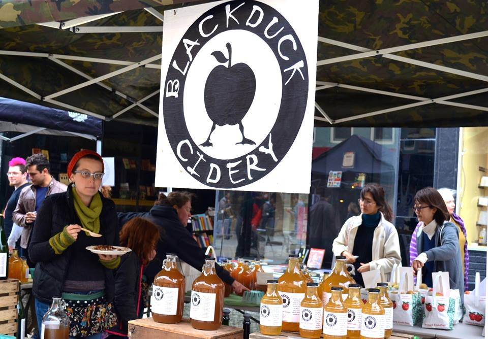
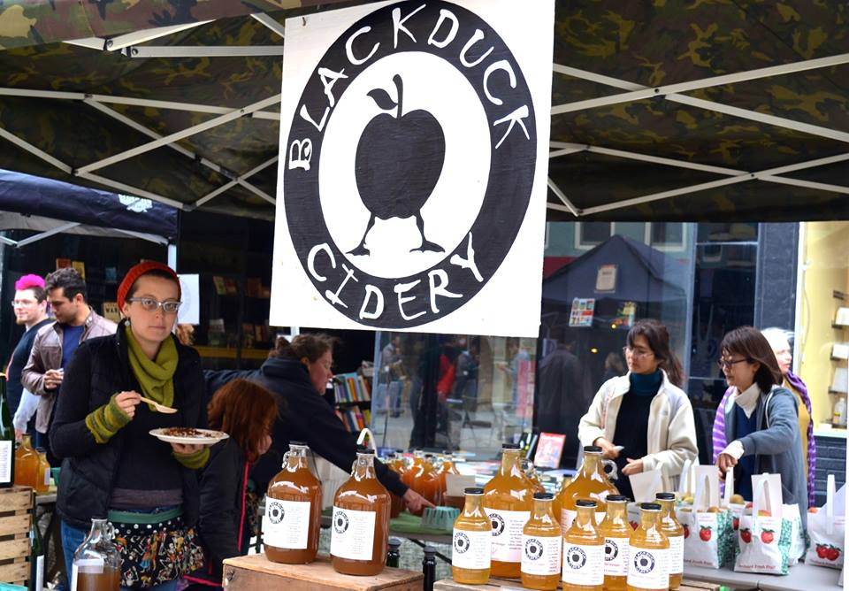

Apple Harvest Festival
33rd Annual Apple Harvest Presented by Tompkins Trust Company
- October 2-4, 2015 -
Apple Harvest Festival
33rd Annual Apple Harvest Presented by Tompkins Trust Company
- October 2-4, 2015 -
BERNIE MILTON PAVILION
Saturday
10:00 – 10:45AM – IC Voicestream
11:00 – 12:45PM – Sixteen Feathers
12:00 – 12:45PM – Vitamin L
12:45 – 1:15PM – Danza Romani
1:15 – 1:45PM – June with Chandani Belly Dance Troupe
2:00 – 4:00PM – Casey Max & the DixieKats
4:30 – 6:00PM – Julia Felice & the Whiskey Crisis
Sunday
10:00 – 11:00AM – Sundown Sally
11:00 – 12:00PM – Mirage Belly Dancers of Ithaca
12:15 – 1:00PM – Namarah
1:15 – 2:00PM – Sunny Weather
2:15 – 3:30PM – NEO Project
4:00 – 6:00PM – The Sweats
STATE THEATRE STAGE
Saturday
11:00 – 12:00PM - Martinez Crew
12:00 – 12:45PM – Drop 10
1:00 – 3:00PM – Summer Underground
2:00 – 4:00PM – Moxie Kumba
4:00 – 6:00PM – Wassa Pan Afrika Dance Ensemble
Sunday
12:00 – 1:00PM – Zajal the Sugarplum Fairy & Friends
MORE ON SUNDAY
Mark Nizer - The 4D Experience Performs live at the State Theatre
Mark Nizer is one of the greatest entertainment comedians and jugglers performing today. His wild exploits have landed him on MTV, HBO’s Just for Laughs, Arsenio Hall, Bob Hope and Other Young Comedians, Comic Strip Live and LA Law.
Tickets: $8-15 Doors: 1:00PM Show: 2:00PM
more info at: www.stateofithaca.com/
 



ABOUT US
Ithaca's premier event of the Fall, Apple Harvest Festival presented by the Tompkins Trust Company, is a three day celebration of food, fun, and apples!
Three fun-filled days of apples, local produce, fresh baked goods, family entertainment, games, rides, prizes and live performances on two stages. Apple Harvest Festival is a great introduction to the farms and artists in Ithaca and its surrounding farming communities
First time visitors can witness a variety of wonderful local entertainment while strolling Ithaca's recently remodeled outdoor pedestrian shopping mall, The Ithaca Commons. The pedestrian mall is the epicenter of the festival and the gateway to a nostalgic journey of harvest season fun.
Over 100 vendors will be selling unique apple varieties, hot apple cider donuts, kettle corn, local farm fresh baked goods and a multitude of around the world specialties. Local farmers are on site selling everything from tasty apple beverages to local pumpkins and of course, apples, apples and more apples. Wineries and cideries have regional beverages available for tasting and purchase. Kids can visit with the goats and learn how fiber is made with Laughing Goat Fiber Farm. Looking for quality goods, visit 50 different handcrafting artisans along Cayuga Street at the fall craft show which includes jewelry, ceramics, home decor, body care, specialty gifts, unique sculpture, clothing and so much more.